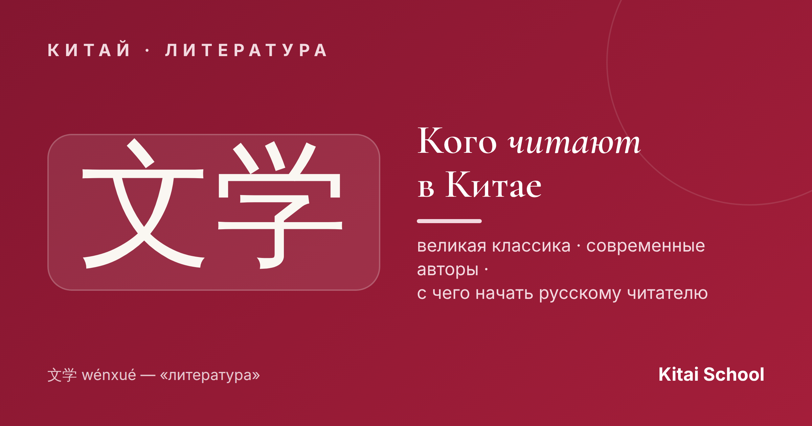
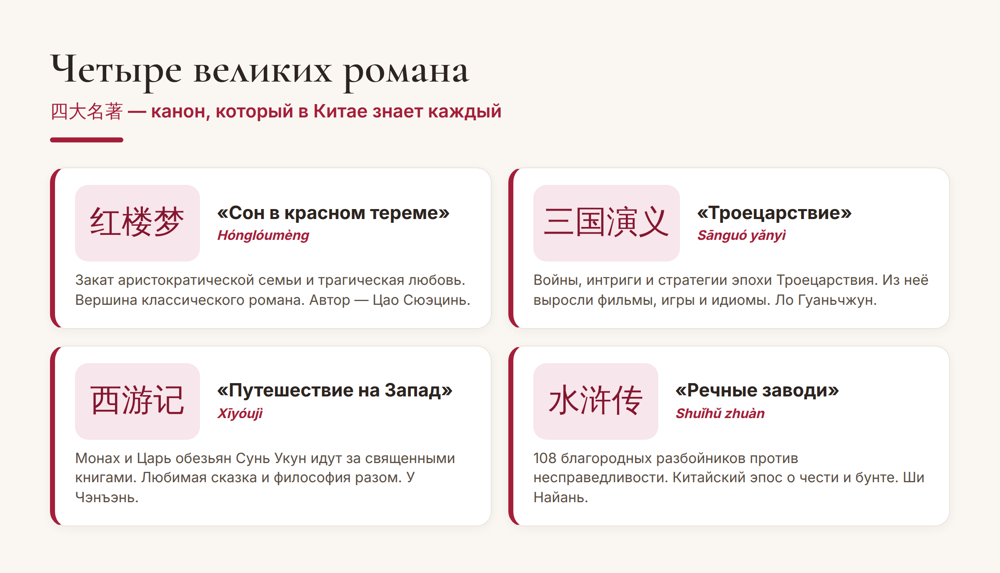
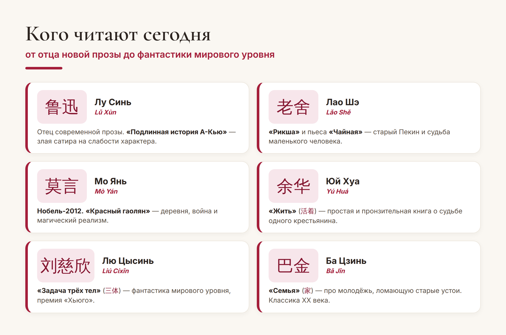

Китай · литература

Китайская литература — это не только древние трактаты. Это живые романы, за которые дают Нобеля и «Хьюго», и книги, которые в Китае знает каждый школьник. Собрала для вас удобный список: что читать, с чего начать и что уже переведено на русский.
Сохраняйте — это готовый маршрут по китайским книгам, от великой классики до современных бестселлеров.
С них начинается любой разговор о китайской литературе. Это 四大名著 (sì dà míngzhù) — «четыре великих классических романа». На них выросли поговорки, фильмы, сериалы и даже компьютерные игры. Знать их сюжеты — то же, что у нас знать Пушкина и Толстого.

Если хочется познакомиться без 2000 страниц, начните с «Путешествия на Запад»: это яркое приключение про Царя обезьян Сунь Укуна, знакомое многим по мультфильмам и сериалам. А «Троецарствие» удобно «войти» через одноимённые фильмы и игры — и потом взяться за книгу.
Современная китайская проза — мощная и разная: от тонкой психологии до твёрдой научной фантастики. Вот авторы, чьи имена стоит знать:

Отдельно выделю двоих для первого знакомства. Юй Хуа (余华) и его роман «Жить» (活着) — короткая, простая и невероятно сильная книга о судьбе обычного человека сквозь весь XX век. И Лю Цысинь (刘慈欣) с трилогией «Задача трёх тел» (三体) — фантастика, которую читают во всём мире, а Netflix снял по ней сериал.
Хорошая новость: многое уже переведено на русский, и начать можно прямо сегодня. Вот практичный список:
Совет. Если учите язык — не хватайтесь сразу за оригинал классики: он труден даже носителям. Начните с адаптированных книг по уровням (graded readers) под ваш HSK, а оригиналы читайте в переводе. Так вы и удовольствие получите, и мотивацию не растеряете.
Через книги китайская культура открывается совсем иначе, чем через новости и путеводители. Вы начинаете понимать, откуда берутся поговорки, ценности и юмор, — и язык учится живее, потому что за словами появляются живые истории. Выберите одну книгу из списка и начните: это самый приятный способ приблизиться к Китаю.
Хорошего вам чтения! 开卷有益。